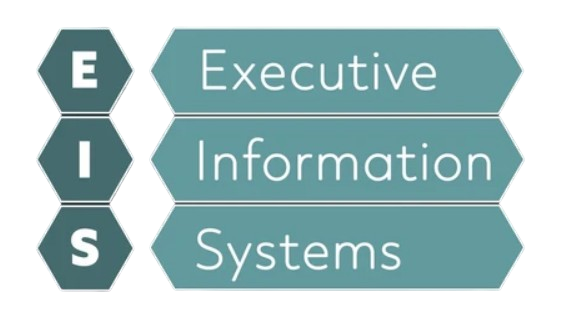
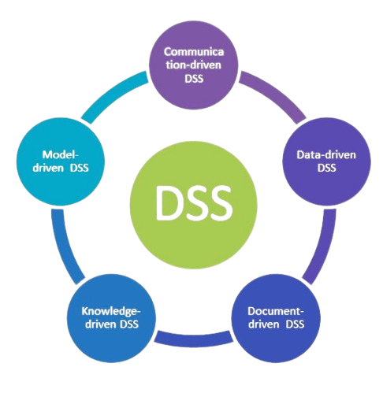
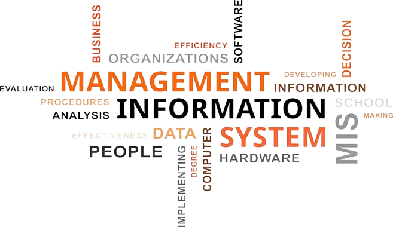

Computer Science
• Computer Science tackles the theories behind computing, data,
and algorithms.
• Has a more theoretical focus compared to the other disciplines,
as well as having a strong connection to mathematics. Belford,
G. G., & Tucker, A. (2024)
Computer Engineering
• Combines Electrical Engineering with computer systems.
• This discipline deals with the design, maintenance, and
construction of hardware and software components in computers.
Belford, G. G., & Tucker, A. (2024).
Information Technology
• Information Technology focuses on selecting, developing, applying,
and/or integrating computing technologies Belford, G. G., & Tucker,
A. (2024).
• Involved in working with both computer hardware and software
Michigan Technological University. (2024)
Information Systems
• Information Systems tackle the mechanics behind information, as
well as the capturing, processing, and analyzing of information
Belford, G. G., & Tucker, A. (2024) .
• This discipline also focuses on the organizational concepts
regarding software and systems. Information Systems also focus on
IS Problem Domains such as decision support and group support
systems. Glass., et al (2004)
Software Engineering
• Is the discipline that designs and tests software
• Software Engineering tackles with the development, construction,
and maintenance of software. The are tasked in creating reliable
software Belford, G. G., & Tucker, A. (2024)
Data
• Data is composed
of unprocessed
facts that lack
interpretation,
Elearn. (2012)
• Becomes
Information after
being organized
Information
• Information is the
data that has been
processed,
organised, and
interpreted to give
meaning, Elearn.
(2012).
• Information can also
be stored, retrieved,
and exchanged when
it comes to
information systems,
Batini, C.,
Scannapieco, M.
(2016).
Types of Information Systems

Executive Information System
This information system displays information from internal and
external sources to executives and assists them in handling decisions,
strategising, and taking action. Al-Mamary, Y., et al (2014)

Decision Support System
This information system uses models, or abstractions of
reality, and data to assess many sorts of issues. They can
also improve learning and decision making. Rainer, R. K. &
Prince, B. (2021)

Management Information System
This information system delivers information to managers to help them plan and
discuss ideas inside an organization. Management information systems also
address the collection, storage, and analysis of data to improve management
efficiency throughout company planning and execution. Gupta A.K. (2010).
Transaction Information System
This information system deals with the gathering,
storage, and processing of data from a company's
basic transactions. Rainer, R. K., Prince, B. (2021)